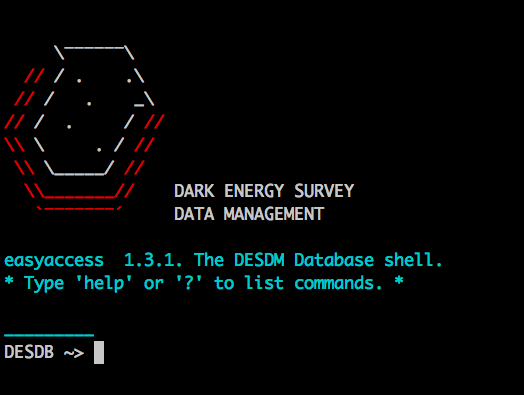
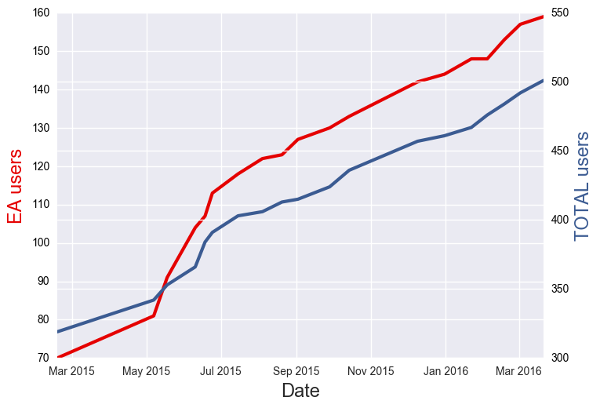
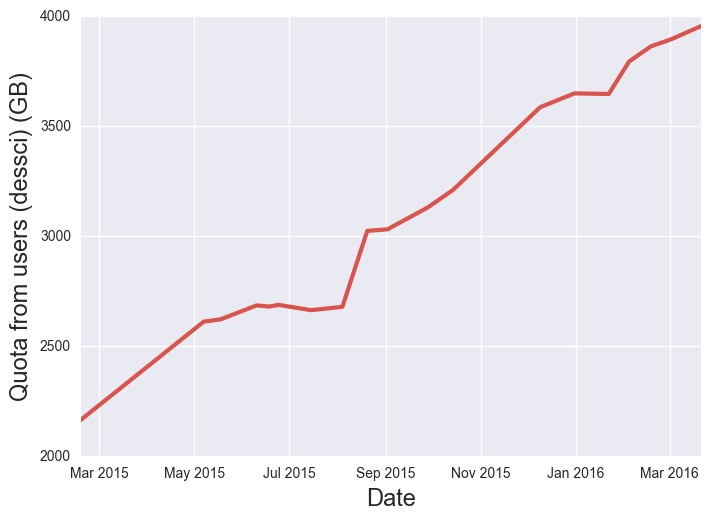

Data Access for Astronomical Surveys
A brief description and demo of tools @ DESDM
Matias Carrasco Kind @ NCSA/UIUC
Thanks to...
-
Weixiang Yu (soon to be looking for grad-school)
-
Di Wen
-
Sahand Hariri
-
Alex Drlica-Wagner
-
Chris Pond
-
You?
-
...
Outline
easyaccess

Motivations
-
DES DB in Oracle
-
Needed upgrade from older versions (trivialaccess)
-
Enhanced SQL command line interpreter
-
Astronomically friendly
-
Python API, web interface
-
There are many other clients but needed one standard for beginners
Some cool features
- History of commands
- Smart TAB auto-completion of commands, columns, users, tables and path
- Very flexible configuration
- Completely open source and written in python
- Write tables in csv, tab, fits and hdf5 formats
- Load sql queries directly from a file
- Load table directly in to DB in one step, no memory issues
- Can be imported as python module (py2/py3)
- Tables are handled and displayed using pandas
- Can run python functions inside query (beta)
- Many more...
Installation
Making things even easier
- Clone it from github
- Using pip or easy_install
- Using EUPS @ DESDM
- Pre-installed in Docker Image (and run outside the container)
- New! Install with conda
conda install easyaccess -c mgckind
Future and Demo
Generalization (SQLAlchemy), in-query python functions, batch jobs, checkpoint, web, better Jupyter integration, more...
easyacess: Enhanced SQL interpreter for astronomical surveys (Carrasco Kind+, 2016?)
For a more detailed tutorial check Here
easyaccess
Some DESDM statistics
DESDM New accounts

More than 220 New users since new On-boarding!
New DES Member? Check Here
Several Services: DB, Confluence, HipChat, BitBucket, Stackoverflow
DB Users

Doubled number of users since easyaccess
More than 180 users with easyaccess with different activity levels
Feedback via github issues, stack-overflow-like questions, email list and personal inquiries
DB Quotas

Personal space actively used and constantly increasing
People create and share tables with one command
~ 4.5 TB in personal space, tables and index tables included
SV Release
https://des.ncsa.illinois.edu/internal/summary
Experimental UI projects being developed (Openstack + Docker)
deslabs.ncsa.illinois.edu
JupyterHub + easyaccess + DS9

- Multi-user jupyter notebook sessions
- Access with DB credentials
- Running in OpenStack ("The Cloud")
- Easy setup (Running from Docker container)
- Easyaccess and other tools installed http://141.142.236.167:8000/hub/
- Local JS9 (DS9 in Javascript) integration
- Still in beta mode, planning to scale up
- Open to DES collaborators
Online Cutout Services
descut.cosmology.illinois.edu
Cutout Services for both: Coadd images and Single Epoch
Nice REST API so can be also accessed from e.g. python
Almost production-like services with GPFS mounted
Soon to be "oficcially" released, we are merging both services
For now check Coadd cutouts and Single Exposure Cutouts
Live demo!
Coadd image cutouts example
Conclusions
Tools being developed to make data access easier
Easyaccess, Cutouts, Jupyter, Js9, etc...
Opensource and integrated software
Bring software to the data!
Want to help? Want some infrastructure? Let me know!